Partido de cuartos de final de la Copa de Oro de fútbol disputado en el Orange Bowl de Miami ante 32.972 personas , noche agradable.
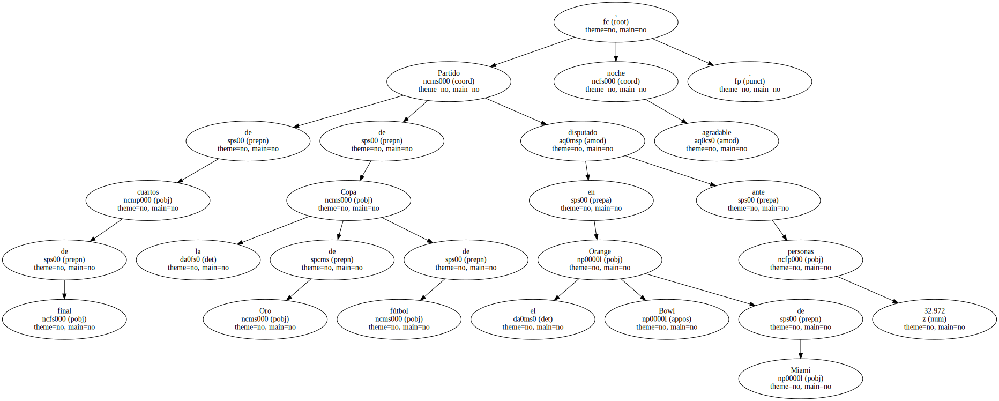Banderas hondureñas en todas las galerías y pocas peruanas.
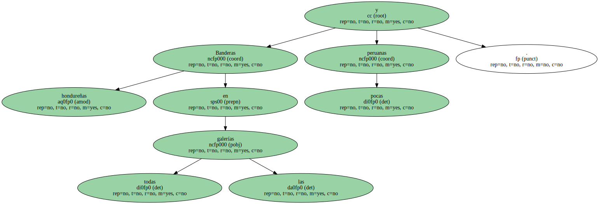Perú se clasificó esta noche para las semifinales de la Copa de Oro al vencer a Honduras por cinco a tres goles en el estadio Orange Bowl de Miami , en un partido que terminó dos minutos antes al invadir el campo seguidores hondureños en protesta por un gol anulado a su equipo.
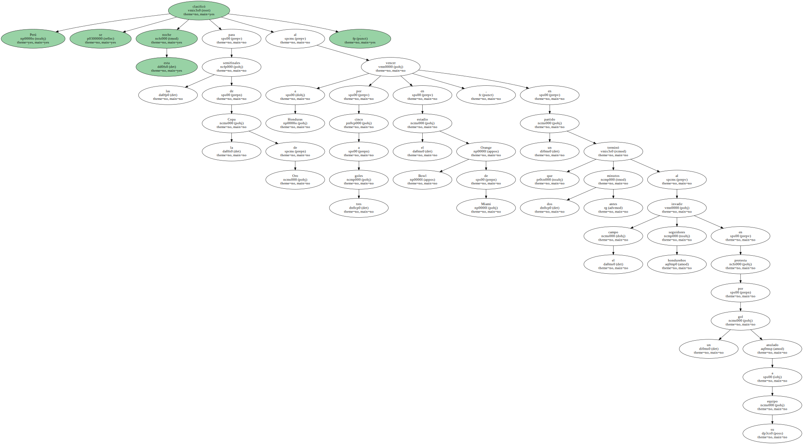El árbitro chileno Mario Sánchez tuvo que dar por finalizado el partido anticipadamente al producirse serios incidentes en el estadio.
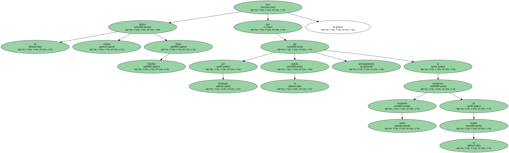Faltando dos minutos para el final , el árbitro anuló un gol al capitán de la selección hondureña , Carlos Pavón , por fuera de juego y éste dio un patadón que mandó la pelota fuera del campo.
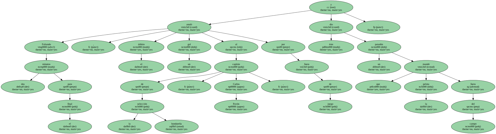Inmediatamente el árbitro expulsó a Pavón y poco después , por empujarlo en protesta , al también hondureño Milton Reyes.
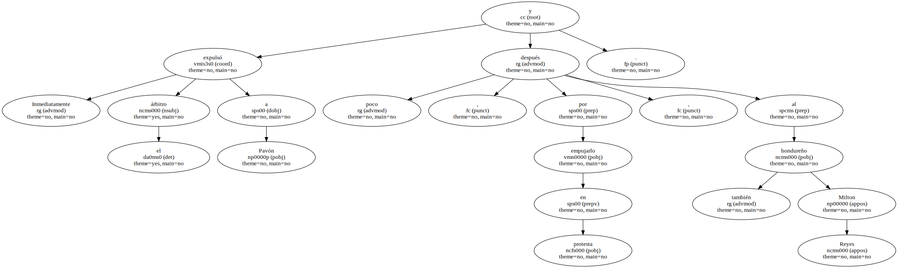Algunos de los más de 10.000 hondureños que estaban situados en la galería este del estadio empezaron a tirar almohadillas y latas al campo.
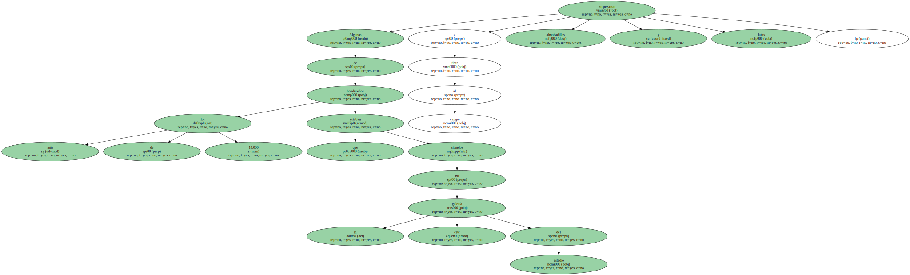Segundos después , se producía la invasión al campo en protesta por lo que consideraban que era un " robo " del partido.
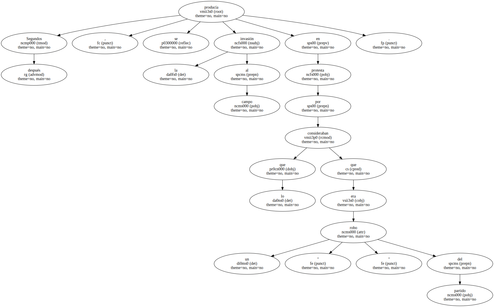El árbitro chileno ya había anulado antes otros dos goles hondureños por fuera de juego.
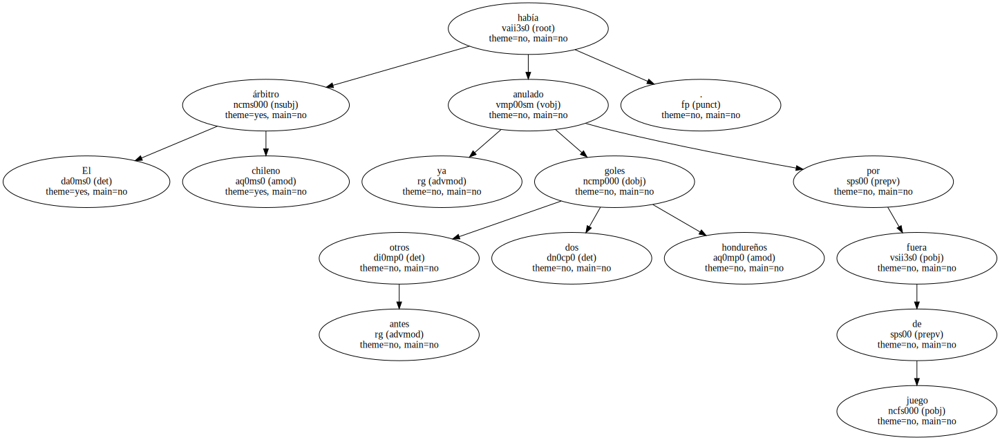Ante la invasión del campo , el colegiado dio por terminado el tumultuoso partido , que hasta ese momento había tenido un gran nivel futbolístico , especialmente por parte de Honduras , que nunca se rindió a pesar de ir siempre por detrás del marcador.
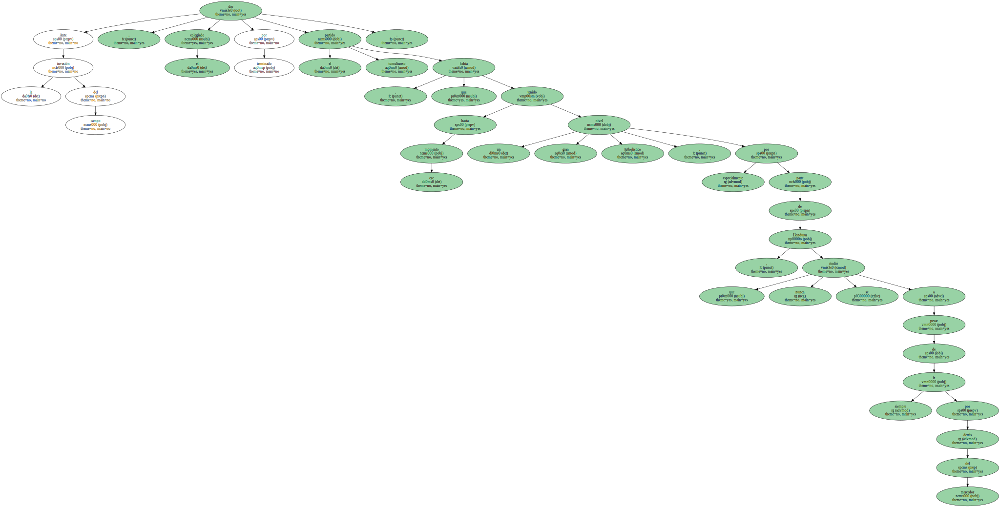Ante la invasión del campo , el colegiado dio por terminado el tumultuoso partido , que hasta ese momento había tenido un gran nivel futbolístico , especialmente por parte de Honduras , que nunca se rindió a pesar de ir siempre por detrás del marcador.
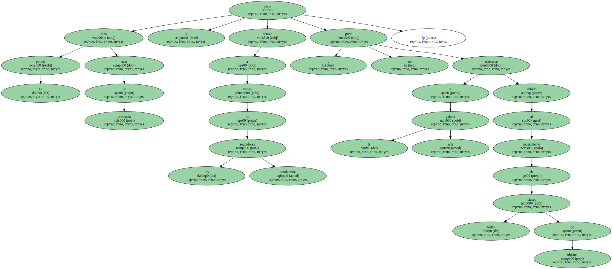La policía hizo acto de presencia y detuvo a varios de los seguidores hondureños , pero no pudo acercarse a la galería este debido al lanzamiento de todas clases de objetos.
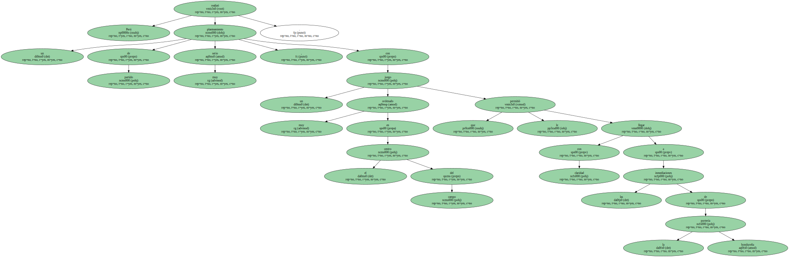Perú realizó un planteamiento de partido muy serio , con un juego muy ordenado en el centro del campo que le permitió llegar con claridad a las inmediaciones de la portería hondureña.
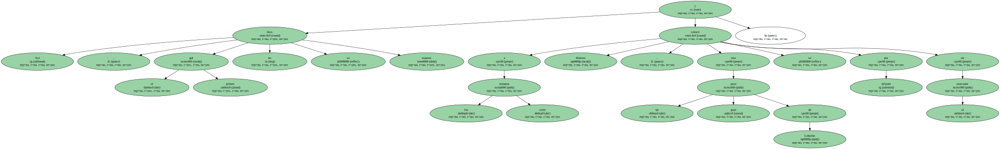Así , el primer gol no se hizo esperar y a los siete minutos Holsen , tras un gran pase de Lobatón se colocó por delante en el marcador.
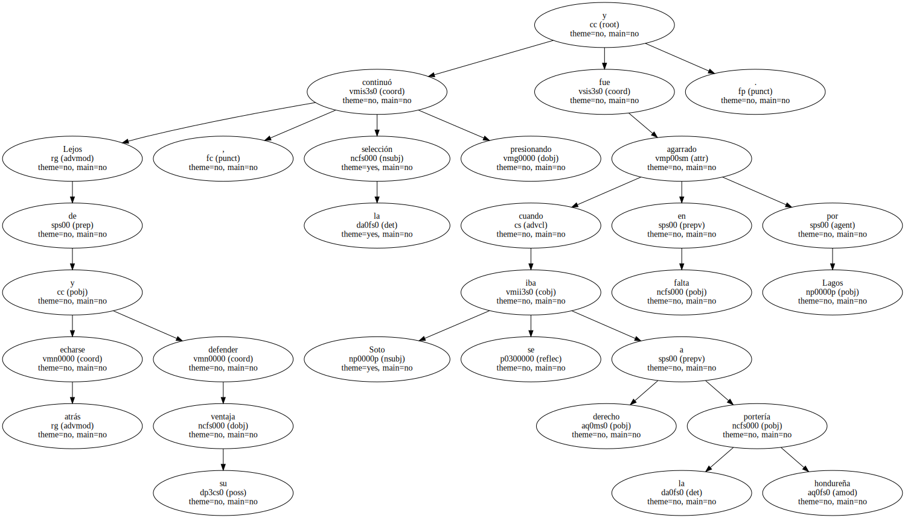Lejos de echarse atrás y defender su ventaja , la selección continuó presionando y cuando Soto se iba derecho a la portería hondureña fue agarrado en falta por Lagos.
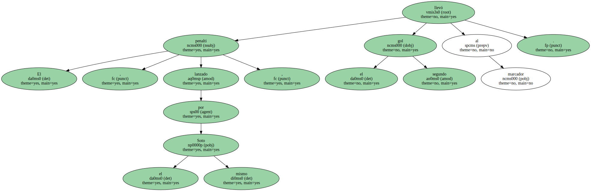El penalti , lanzado por el mismo Soto , llevó el segundo gol al marcador.
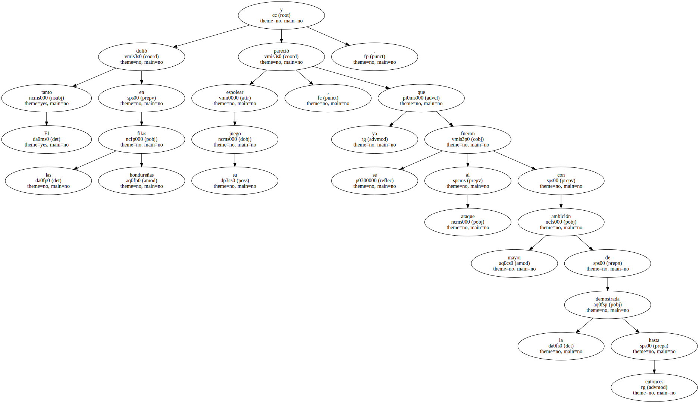El tanto dolió en las filas hondureñas y pareció espolear su juego , ya que se fueron al ataque con mayor ambición de la demostrada hasta entonces.
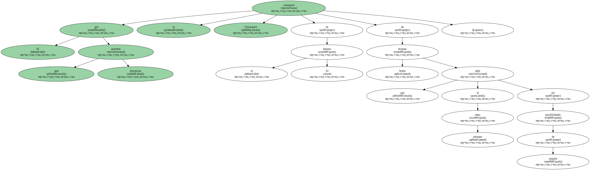El gol que acortaba distancias lo consiguió Clavasquin en el minuto 32 de fuerte disparo que dejó al meta peruano sin posibilidades de atajarlo.

Honduras continuó presionando , especialmente por la banda izquierda , donde Milton Núñez se convirtió en una pesadilla para la defensa peruana , que se veía impotente para frenar sus internadas.
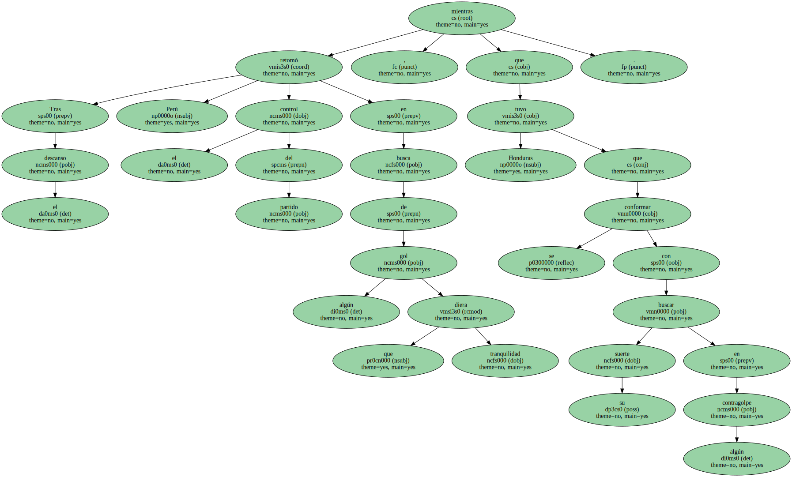Tras el descanso Perú retomó el control del partido en busca de algún gol que diera tranquilidad , mientras que Honduras se tuvo que conformar con buscar su suerte en algún contragolpe.
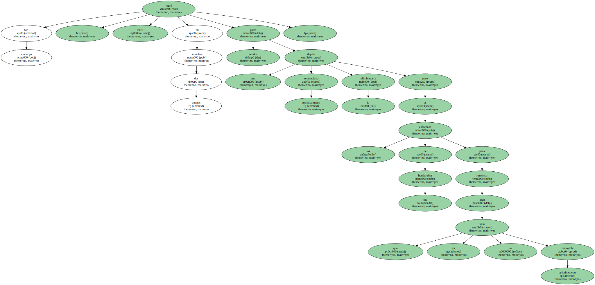Sin embargo , Perú en apenas dos minutos logró sendos goles que dejaba sentenciada prácticamente la eliminatoria pese a los esfuerzos de los hondureños para remontar algo que ya se veía prácticamente imposible.
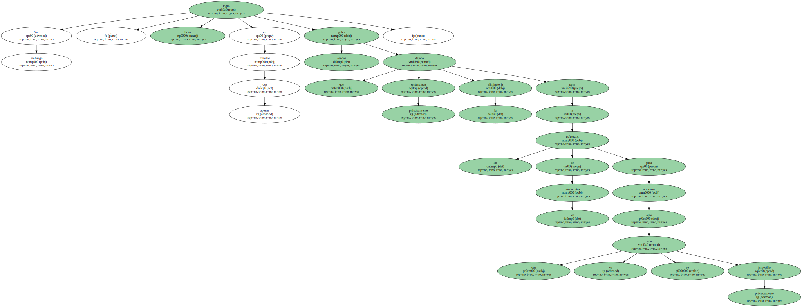